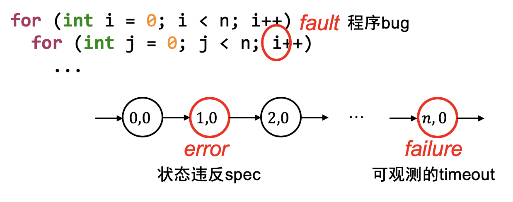
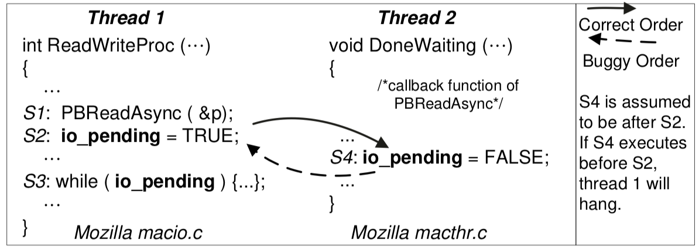

背景
同步、互斥的时候我们已经讲了很多 “不对” 的案例
- 并发编程：从入门到放弃
- 哲 ♂ 学家死锁
- 各种错误的自旋锁
- 教科书上的条件变量 signal 错线程
- ……
不要笑！🤡 竟是我自己
- 并发 bugs 怎么办？
本次课内容与目标
复习调试理论
- 你在《操作系统》课上活下来所需的最重要的理论
理解并发 bugs 的类型、产生原因和预防方法
- 死锁 (lockdep)
- 原子性/顺序违反 (测试 + 检查)
应用调试理论
- 如何在编写操作系统内核时保护自己少受伤害？
- (不受伤是不可能的啦……)
调试理论：复习
基本原则
在《计算机系统基础》实验中提出 (视频回看)
- 只要写代码，就会一直伴随大家
- (ICS) 不管是 crash 了，图形显示不正常了，还是
HIT BAD TRAP了，最后都是你自己背锅 - (OS) 不管是卡死、异常还是虚拟机重启，都是你自己的 bug
- (ICS/OS) 你以为最不可能出 bug 的地方，往往 bug 就在那躺着
调试理论：为什么 Debug 那么困难？
程序：
- 程序中的 bug 是程序与设计/意图违反之处
- debug 就是定位到程序中 bug 的过程
程序员：犯的是 Fault，看到的是 Failure
- Fault (bug) → Error (程序状态错) → Failure (可观测的结果错)

调试理论：如何找到 Bug?
调试理论：如果我们能判定任意程序状态的正确性，那么给定一个 Failure，通过二分查找定位到第一个 Error 的状态，导致此状态的代码就是 Fault (bug)。
在实际中的应用：状态机的执行可能很长，但我们只要标记出一些
关键的状态 ，就能帮我们缩小排查问题的范围
实际中的调试：更 “人类友好” 的分段检查
- printf → 自定义 log 的 trace
- gdb → 指令/语句级 trace
坠入并发的深渊……
并发：调试理论的灾难
在无法 “准确复现一次执行” 的基础上，“找到第一个 error 的状态” 变难了……
Fault → Error
- 每次的 Error 都不一样
- 无法 “二分”
Error → Failure
- 日志仍然能帮助我们缩小 Error 发生的范围
- 但 Failure 更难理解 (错误的输出/神秘异常/神秘重启/...)
挣扎：使用调试理论
调试理论告诉我们：failure point 很重要
- 可以追溯出一些 error states
- QEMU 设计者当然知道这一点
如果我们希望有什么，那一定会有的！
RTFM: QEMU Monitor (例子：cpu-reset.c)
- 得到详尽的日志:
log int,cpu_reset,exec- fault → error → failure
int,cpu_reset- 帮助我们定位 failureexec- 帮助我们定位 error (执行流)- 甚至可以开发一个小工具，“绘制” 出程序执行的路径
- fault → error → failure
并发 Bugs 到底长什么样？
一种研究流派：实证研究 (empirical study)
- 为了更好地解决并发 bugs 的问题
- 从现实数据集中 (随机) 选取一定比例的例子
- 对结论进行归纳总结
一些实证研究
- S. Lu, et al. Learning from mistakes — A comprehensive study on real world concurrency bug characteristics. In Proc. of ASPLOS, 2008.
- Z. Yin, et al. How do fixes become bugs? A comprehensive characteristic study on incorrect fixes in commercial and open source operating systems. In Proc. of ESEC/FSE, 2011.
死锁 (Deadlock)
死锁 (Deadlock)
A deadlock is a state in which each member of a group is waiting for another member, including itself, to take action.
Empirical study: MySQL (14/9), Apache (13/4), Mozilla (41/16), OpenOffice (6/2)
出现线程 “互相等待” 的情况 (路口空间 = 资源)

AA-Deadlock
假设你的 spinlock 不小心发生了中断
- 错误实现的 popcli
- 不应该发生的
yield()
void os_run() {
spin_lock(&list_lock);
spin_lock(&xxx);
spin_unlock(&xxx); // ---------+
} // |
// |
void on_interrupt() { // |
spin_lock(&list_lock); // <--+
spin_unlock(&list_lock);
}
ABBA-Deadlock
void obj_move(int i, int j) {
spin_lock(&lock[i]);
spin_lock(&lock[j]);
arr[i] = NULL;
arr[j] = arr[i];
spin_unlock(&lock[j]);
spin_unlock(&lock[i]);
}
上锁的顺序很重要……
obj_move本身看起来没有问题obj_move(1, 2);obj_move(2, 1)→ 死锁
避免死锁
死锁产生的四个必要条件 (Edward G. Coffman, 1971):
- 互斥：一个资源每次只能被一个进程使用
- 请求与保持：一个进程请求资阻塞时，不释放已获得的资源
- 不剥夺：进程已获得的资源不能强行剥夺
- 循环等待：若干进程之间形成头尾相接的循环等待资源关系
“理解了死锁的原因，尤其是产生死锁的四个必要条件，就可以最大可能地避免、预防和解除死锁。所以，在系统设计、进程调度等方面注意如何不让这四个必要条件成立，如何确定资源的合理分配算法，避免进程永久占据系统资源。此外，也要防止进程在处于等待状态的情况下占用资源。因此，对资源的分配要给予合理的规划。” ——
Bullshit .破坏每一个条件都是非常困难的 (请阅读教科书)
避免死锁 (cont'd)
AA-Deadlock
- AA 型的死锁容易检测，及早报告，及早修复
- spinlock.c
if (holding(lk)) panic();
ABBA-Deadlock
- 任意时刻系统中的锁都是有限的
- 严格按照固定的顺序获得所有锁 (lock ordering; 消除 “循环等待”)
- 试一试：用状态机证明 $T_1: A\to B\to C; T_2: B \to C$ 是安全的
- “在任意时刻总是有一个线程 (获得 “最靠后” 锁的) 可以继续执行”
- 试一试：用状态机证明 $T_1: A\to B\to C; T_2: B \to C$ 是安全的
Lock Ordering: 应用 (Linux Kernel: rmap.c)

你大约察觉了……
Textbooks will tell you that if you always lock in the same order, you will never get this kind of deadlock. Practice will tell you that this approach doesn't scale: when I create a new lock, I don't understand enough of the kernel to figure out where in the 5000 lock hierarchy it will fit.
The best locks are encapsulated: they never get exposed in headers, and are never held around calls to non-trivial functions outside the same file. You can read through this code and see that it will never deadlock, because it never tries to grab another lock while it has that one. People using your code don't even need to know you are using a lock.
—— Unreliable Guide To Locking by Rusty Russell
让程序员彻底避免死锁？你想多了……
调试公理：未测代码永远是错的
- 并发那么复杂，程序员哪能充分测试啊……
lockdep, since Linux Kernel 2.6.17; also in OpenHarmony!
- 为每一个 “lock class” 检查 (分配一个 key)
- lock-site.c; 我们也可以在 xv6 里实现一个！
- 在运行时观察所有的 lock/unlock
- lock/unlock 时记录所有可能的上锁顺序
- 线程获得 $X, Y, Z$ 会记录 $X \to Y, X \to Z, Y \to Z$
- 检查是否存在 $A \to B$ 和 $B \to A$ (deadlock)
- 即便死锁没有真正发生，但只要有 ABBA 的风险就会报告
- lock/unlock 时记录所有可能的上锁顺序
死锁：锁并不是唯一的原因
在涉及同步的时候，情况就复杂得多了……
- 老总打电话给秘书：“这几天我陪你去北京玩玩，你准备一下”
- 秘书打电话给老公：“这几天我要和老总去北京开会”
- 老公打电话给情人：“这几天我老婆不在家，陪我”
- 情人打电话给辅导学生：“这几天老师有事，停课”
- 学生打电话给爷爷：“这几天不上课，爷爷你陪我玩”
- 爷爷给秘书打电话：“北京去不了了，孙子要我陪”
- 秘书给老公打电话：“老总突然有事不去北京开会了”
- 老公给情人打电话：“老婆不走了，下次再说”
- 情人给辅导学生打电话：“这几天照常上课”
- 学生给爷爷打电话：“555 老师说这几天照常上课”
- 爷爷给秘书打电话：还是去北京吧，你准备准备
并发 Bug：不仅是死锁
不上锁不就没有死锁了吗？
程序员：花式犯错
回顾我们实现并发控制的工具
- 互斥锁 (lock/unlock) - 原子性
- 条件变量 (wait/signal) - 同步
忘记上锁——原子性违反 (Atomicity Violation, AV)
忘记同步——顺序违反 (Order Violation, OV)
Empirical study: 在 105 个并发 bug 中 (non-deadlock/deadlock)
- MySQL (14/9), Apache (13/4), Mozilla (41/16), OpenOffice (6/2)
97% 的非死锁并发 bug 都是 AV 或 OV 。
原子性违反 (AV)
“ABA”
- 我以为一段代码没啥事呢，但被人强势插入了

原子性违反 (cont'd)
有时候上锁也不解决问题
- “TOCTTOU” - time of check to time of use

- J. Wei and C. Pu. TOCTTOU vulnerabilities in UNIX-style file systems: An anatomical study. In Proc. of FAST, 2005.
顺序违反 (OV)
“BA”
- 怎么就没按我预想的顺序来呢？
- 例子：concurrent use after free

Empirical Study 的意义
程序员：我本地都跑了几万次了，没问题啊
- 一部署到生产环境里就 💥 爆炸了
我：在本地测的好好的啊
- 提交到 Online Judge 上连 easy tests 都过不了 (真实)
Empirical study 给了我们更多有趣的发现，指导 bug 的发现/修复：
- Almost all (96%) of the examined bugs are guaranteed to manifest if certain partial order between 2 threads is enforced.
- Many (66%) of the examined non-deadlock bugs’ manifestation involves concurrent accesses to only one variable.
- Almost all (97%) of the examined deadlock bugs involve two threads circularly waiting for at most two resources.
调试理论应用：Lab 1 (PMM)
Online Judge 体验极差
Lab 1 有一定难度
- 有一点轻微的并发 bug → Wrong Answer
- 用一把大锁 → Wrong Answer (< 1Mop/s)
- 大部分分数到手，建议从这里开始
如果你调试了很久都没有想法，不如用一点系统化的手段。
“跳出问题看问题” 是专业人士应当具备的素质。
做好 Lab1 的测试框架
- 虽然大家可以硬来 (xjb 改程序直到 Online Judge 通过)
- 但总有一天大家会面对交付代码给客户的场景
Fault → Error: 我们需要更多的测试用例！
想糊弄？糊弄不过去的。
来构造 kalloc 的 workload 吧！
void os_run() {
while (1) {
pmm->alloc(random_size());
// Insufficient: pmm->alloc(32);
}
}
创建合理的 Workload: kalloc
Online Judge 上的 workload:
- 为每一种分配大小 $(2^{i-1} + 1) \ldots 2^{i}$ 设置概率
- 频繁的小内存分配、频繁的大内存分配 (4 KiB)、混合的内存分配……
struct workload {
int pr[N], sum; // sum = pr[0] + pr[1] + ... pr[N-1]
// roll(0, sum-1) => allocation size
};
static struct workload
wl_typical = {.pr = {10,0,0, 40, 50, 40,30,20,10,4,2,1} },
wl_stress = {.pr = { 1,0,0,400,200,100, 1, 1, 1,1,1,1} },
wl_page = {.pr = {10,0,0, 1, 1, 1, 1, 1, 1,1,1,1} };
static struct workload *workload = &wl_typical;
创建合理的 Workload: kfree
并发的 alloc-free 是很多问题的来源。
但同学们一定是懒得去测试的。 —— jyy
Online Judge: 会把分配的结果保存到一个并发数据结构中
- 用 C11
stdatomic.h实现- 保证合法的 kalloc/kfree 序列
- 但一个 CPU 的申请的内存可以在另一个 CPU free
想自己实现个简单的？
- 在 CPU 本地缓存本 CPU 的 allocation log
- 达到一定大小后放入共享队列中 (队列满即丢弃)
- 每隔一段时间从队列中取一个 log 执行 free
更多的测试用例：不仅是 Workload
基本想法: workload + 在适当的时候插入
delay()
- 这才是 Online Judge 测试的精髓
- allocation-biased/free-biased/mixed
ABBA (deadlock), ABA (AV), BA (OV) 都可以通过这种方式触发
- 插入 delay 是个技术活
- K. Sen. Race directed random testing of concurrent programs. In Proc. of PLDI, 2008.
- D. Chen, et al. Testing multithreaded programs via thread speed control. In Proc. of ESEC/FSE, 2018.
- G. Li, et al. Efficient scalable thread-safety-violation detection: Finding thousands of concurrency bugs during testing. In Proc. SOSP, 2019.
Error → Failure: 我们需要更多的检查！
很多程序应该满足的 specification 并没有被检查
- C/C++ 为了性能考虑，就让 undefined behavior 发生
- 并不总是显现 “显著” 的后果
- 给你一种程序好像没问题的错觉
在程序中设计各种检查 (就像 spinlock.c 那样)
- double acquire, dangling release, 持有锁时开中断, 不配对的 unlock
检查：不必大费周章
- 统计当前的 spin count
- 如果超过某个明显不正常的数值就报告
- 配合调试器 backtrace 一秒诊断死锁
- 如果超过某个明显不正常的数值就报告
更多的检查: Double-Allocation
内存分配要求：已分配内存 $S = [\ell_0, r_0) \cup [\ell_1, r_1) \cup \ldots$
- kalloc($s$) 返回的 $[\ell, r)$ 必须满足 $[\ell, r) \cap S = \varnothing$
- thread-local allocation + 并发的 free 还蛮容易弄错的
// allocation
for (int i = 0; (i + 1) * sizeof(u32) <= size; i++) {
panic_on(((u32 *)ptr)[i] == MAGIC, "double-allocation");
arr[i] = MAGIC;
}
// free
for (int i = 0; (i + 1) * sizeof(u32) <= alloc_size(ptr); i++) {
panic_on(((u32 *)ptr)[i] == 0, "double-free");
arr[i] = 0;
}
更多的检查: Buffer Overrun
Canary (金丝雀) 对一氧化碳非常敏感
- 用生命预警矿井下的瓦斯泄露 (since 1911)

Canary
- “牺牲” 一些内存单元，来预警 memory bug 的发生
- (程序运行时没有动物受到实质的伤害)
Canary 的例子：保护内核栈
#define MAGIC 0x55555555
#define BOTTOM (STK_SZ / sizeof(u32) - 1)
struct kernel_stack { char data[STK_SZ]; };
void canary_init(struct kernel_stack *s) {
u32 *ptr = (u32 *)s;
for (int i = 0; i < CANARY_SZ; i++)
ptr[BOTTOM - i] = ptr[i] = MAGIC;
}
void canary_check(struct kernel_stack *s) {
u32 *ptr = (u32 *)s;
for (int i = 0; i < CANARY_SZ; i++) {
panic_on(ptr[BOTTOM - i] != MAGIC, "underflow");
panic_on(ptr[i] != MAGIC, "overflow");
}
}
烫烫烫和屯屯屯

msvc 中 debug mode 的 guard/fence/canary
- 未初始化栈:
0xcccccccc - 未初始化堆:
0xcdcdcdcd - 对象头尾:
0xfdfdfdfd - 已回收内存:
0xdddddddd
>>> (b'\xcc' * 80).decode('gb2312')
'烫烫烫烫烫烫烫烫烫烫烫烫烫烫烫烫烫烫烫烫烫烫烫烫烫烫烫烫烫烫烫烫烫烫烫烫烫烫烫烫'
手持两把锟斤拷，口中疾呼烫烫烫
脚踏千朵屯屯屯，笑看万物锘锘锘
(这些曾经可怕的形象原来一直在无形中保护你)
更多的检查: Sanitizers
“动态程序分析”
- 在程序运行时进行观测和检查；适当的时候对程序行为进行调控
常见的动态分析：检查某些 specification 是否被违反

- 可以把动态分析理解成两个部分
- 一个部分不断地在程序运行时打印日志
- lock, unlock, memory access, ...
- 另一个部分解析日志，查看有没有什么问题
- lockdep: 检查是否存在 ABBA
- 一个部分不断地在程序运行时打印日志
- 付出程序变慢的代价
- 但是非常值得
Sanitizers: 前所未有的宝藏
如果你没用过 lint/sanitizers，根本不能算会编程。
- AddressSanitizer (asan); (paper)
- 检查各种非法地址访问: buffer (heap/stack/global) overflow, use-after-free, use-after-return, double-free, ...
- demo: uaf.c; kasan 现已加入 Linux 内核
- MemorySanitizer (msan)
- 检查未初始化的读取
- ThreadSanitizer (tsan)
- 检查是否存在数据竞争 (data race)
- UBSanitizer (ubsan)
- 检查是否存在各种看起来没问题的 undefined behavior: misaligned pointer, signed integer overflow, ...
我的操作系统内核如何实现 Sanitizer?
你知道很多变量的
CHECK_INT(waitlist->count, >= 0)CHECK_INT(pid, < MAX_PROCS)CHECK_HEAP(ctx->rip)- 含义发生改变 → memory error
- 不要小看这些检查
- 它们很可能在虚拟机神秘重启/卡住/...前发出警报
#define CHECK_INT(x, cond) \
({ panic_on(!((x) cond), "int check fail: " #x " " #cond); })
#define CHECK_HEAP(ptr) \
({ panic_on(!IN_RANGE((ptr), heap)); })
总结
总结
本次课内容与目标
- 复习调试理论 (Fault, Error, Failure)
- 理解并发 bugs
- 将调试理论应用到并发
Take-away messages
- “好的东西” 离我们一点也不远
- Fault → Error: 我们需要更多的测试用例！
- 构造更强的 workloads
- Error → Failure: 我们需要更多的检查！
- assertions, sanitizers, ...